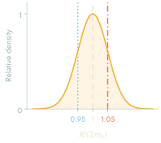

The question
In the papers that I wrote with Martin Bojowald and collaborators on quantum black holes and on spacetime superpositions, the quantum state of the geometry is described with canonical effective methods, using the expectation values of the canonical variables together with moments such as the fluctuations of a metric component. The effective equations were solved approximately: the quasiclassical approximation used for static quantum black holes breaks down before the horizon is reached, and the line element obtained for spacetime superpositions holds far away from the black hole. For this reason, neither of these results tells where the horizon of a superposition is located. Furthermore, a finite number of moments does not fix the wave function. In order to answer the question, I specified the state completely and kept only the mass of the black hole, so that the state is a wave function of the Schwarzschild mass and each branch is a classical Schwarzschild geometry.
One horizon for each mass
In units with G = c = 1, let m be the mass of a Schwarzschild geometry. In order to locate its horizon without making use of a particular time coordinate, I use the areal radius r, which is defined by the area 4πr² of a sphere of symmetry, together with the norm of its gradient,
F(r; m) = gab ∂ar ∂br = 1 − 2m/r .
In ingoing Eddington-Finkelstein coordinates, with the advanced time v, the radial part of the line element takes the form −F dv² + 2 dv dr, which remains regular at the zero of F. At r = 2m, the outgoing radial null direction is tangent to the sphere of constant r, and therefore this zero is the future event horizon. Each value of the mass thus has exactly one horizon radius, rH = 2m. In a superposition of masses, the horizon radius becomes the operator 2m̂, which acts by multiplying the wave function by twice the mass.
The distribution of horizon radii
For a wave function ψ(m) whose probability density is P(m) = |ψ(m)|², the expectation value of any function Q of the mass is given by
⟨Q⟩ = ∫ P(m) Q(m) dm .
Changing variables in this integral gives the density of the horizon radius R = 2m, which is
PH(R) = ½ P(R/2) .
Consequently, if the mass has the mean m0 and the standard deviation σm, the horizon radius has the mean 2m0 and the standard deviation 2σm, for any distribution of the mass. The figure below uses a Gaussian packet, centered at m0 and cut off at four times its width a, with
P(m) ∝ exp[−(m − m0)²/2a²]
for |m − m0| ≤ 4a and zero otherwise, where 4a < m0. Due to the cutoff, all masses are positive and the branches share a static exterior, r > 2(m0 + 4a), while σm is slightly smaller than a.
One diagram for all branches
The Penrose diagrams of all branches have the same shape when each is drawn in units of its own mass, so in order to compare the horizon radii directly, I draw them as contours on the diagram of one reference geometry, Schwarzschild at the mean mass. For this reference geometry I write x = r/2m0 and use its Kruskal coordinates U and V together with the compact coordinates ξ and τ, which are given by
UV = (1 − x) ex ,
ξ = arctan V − arctan U ,
τ = arctan V + arctan U ,
with ξ running horizontally and τ vertically in the diagram. The reference horizons at x = 1 are the diagonals where U = 0 or V = 0, and the singularity at x = 0 is at τ = ±π/2.


Smaller mass, R = 2m0 − 2σmMean mass, R = 2m0Larger mass, R = 2m0 + 2σm
The dotted and dash dotted curves are only curves of constant areal radius in the reference geometry. The horizon of each branch is a null surface in that branch's own geometry, but a sphere with the radius 2m0 + 2σm lies outside the horizon of the mean mass, where it traces a timelike curve on the reference diagram, and a sphere with the radius 2m0 − 2σm lies inside it, where it traces a spacelike curve. I therefore read the tint as the range of radii where the horizon may be, and not as a single horizon with a finite thickness. Probabilities follow from integrating the density over an interval of R.
Reading the picture
The distribution can be read in the following way. If the areal radius of a sphere lies between two of the possible horizon radii, the sphere is outside the horizon in the branch with the smaller mass but inside the horizon in the branch with the larger mass. The probability for the second case is the probability that the mass exceeds half of the radius of the sphere, P(m > r/2). Spheres in different branches are compared through their area, which is why I need neither a common time coordinate for the branches nor an averaged metric in this comparison.
I should add that the horizon radius is a function of the mass alone, and therefore its distribution is determined by |ψ(m)|² only. If the wave function had a phase that depends on the mass, the figure would be the same, and I would also get the same figure for a classical mixture of Schwarzschild geometries with this distribution of the mass. The figure therefore does not show the coherence of the superposition. The branches are static as well, so the spread is a range of possible values of the mass, which does not change in time.
Papers
- Quasiclassical solutions for static quantum black holesarXiv:2012.07649Journal
- Spacetime superpositions as fluctuating geometriesarXiv:2405.20193Journal